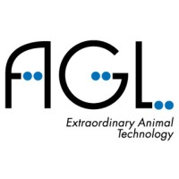
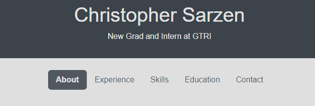
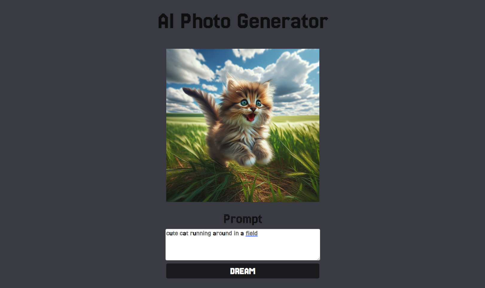
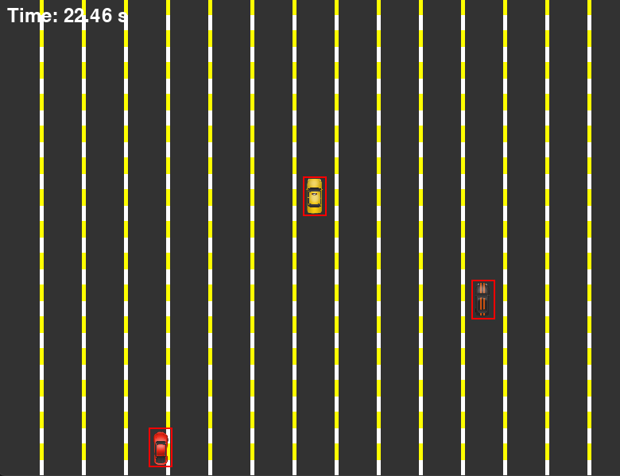
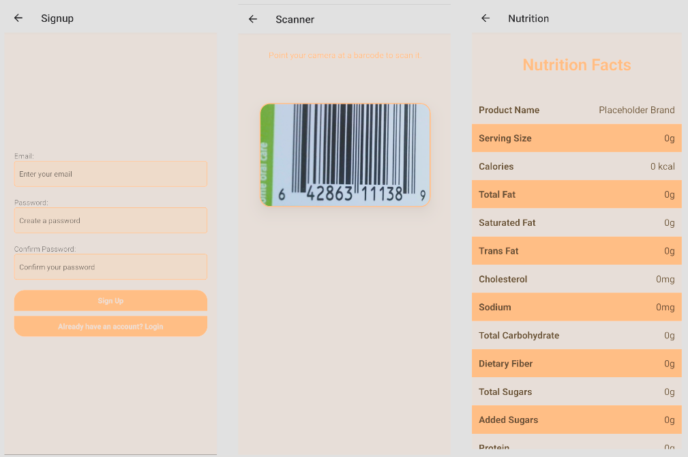
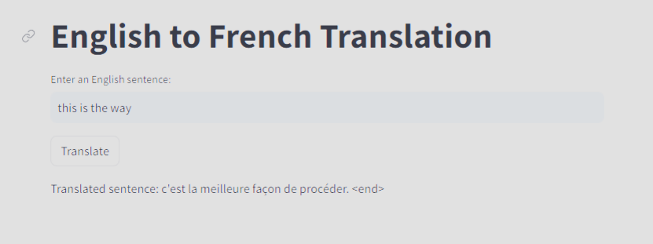
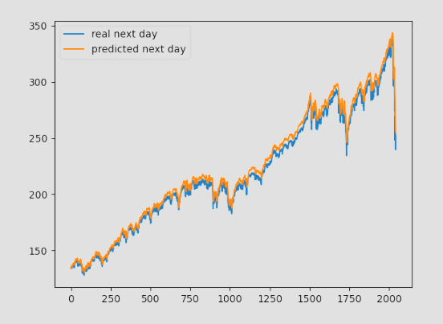
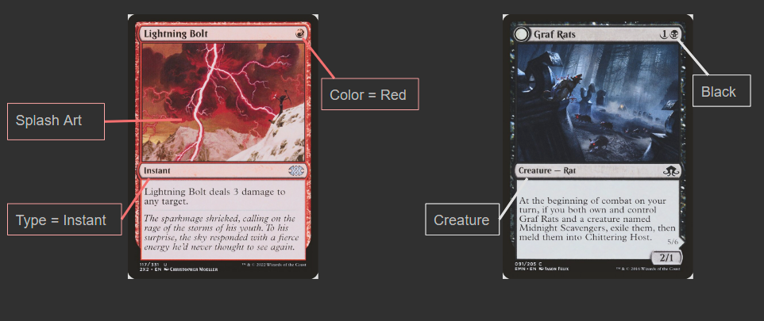

About Me
Driven Computer Science graduate with a foundation in software engineering and artificial intelligence, eager to leverage my knowledge in an entry-level position. Committed to adding value to a team while advancing my skills and forging strong industry relationships.
Experience
GTRI
September 2023 - Present
Built a web application leveraging Python Flask, JavaScript, HTML, and CSS to visualize U.S rail networks through a max flow min cut algorithm, facilitating the analysis of grain transportation flows between economic areas. Designed a complex Multi-Source, Multi-Sink graph using the Python NetworkX library to simulate grain flow for the back end of the web app through that max flow algorithm. Implemented the Leaflet JavaScript library to display the max flow graph on top of the United States. This library also aided in the implementation of interactivity in the map. The library helped in developing features such as conducting network attack simulations with user input by selecting areas with a polygon tool.
AgLogica
May 2022 - August 2022
Engineered and maintained a robust MLOps pipeline using advanced audio processing techniques to differentiate between turkey coughs and clucks for disease detection. Implemented an automatic audio noise reduction process, significantly improving the Convolutional Neural Network (CNN) model's accuracy from 68% to 84%. Automated the creation and processing of Mel spectrograms from 40,000 audio files utilizing Python and the librosa library, enhancing data quality for model training.
Side Projects
This Website
Personal Finance Tracker Web App
Simple personal finance tracker web app made so that I could learn Python Flask and HTML. Utilized Python Flask, HTML, CSS, JavaScript, and SQLite3.
AI Photo Generator Web App
Webapp that calls the OpenAI api to generate images based off user request. Utilized Vite with vanilla JavaScript, HTML, and CSS.
Driving Simulator
Simple pygame game where you dodge cars trying to get to work on time! It's infinite - the goal is to see how long you can last as the game speeds up. Utilized Python and Pygame.
AI Adventure Time

Simple story generator that could take user input to generate a scenario with preset 3D characters and scenes from the show Adventure Time. Utilized ChatGPT's API, Unity, Blender, Python, and the Twitch and Youtube APIs.
Skills
Stars indicate skill level
Languages
- Python
- Java
- JavaScript
- TypeScript
- C++
- HTML
- CSS
- Matlab
- C#
Databases
- MongoDB
- sqlite3
- PostgreSQL
- Microsoft SQL Server 2019
Version Control and Tools
- Git (GitHub, BitBucket)
- Azure DevOps
- Docker
Other Technologies
- TensorFlow
- Keras
- Pytorch
- Unity
- Azure
- Microsoft Suite
Certifications
- Azure Fundamentals - May 12, 2022
Education
Kennesaw State University
B.S. in Computer Science, AI concentration
List of Relevant Classes: Data Structures, Intro to Software Engineering, Discrete Mathematics, Technical Writing, Calculus, Calculus 2, Linear Algebra, Operating Systems, Fundamentals of Data Communication, Computer Organization and Architecture, Introduction to Database Systems, Artificial Intelligence, Machine Learning, Machine Vision, Professional Practices and Ethics, Algorithm Analysis, Deep Learning, Concepts of Programing Languages, Parallel Distributed Computing, Cryptography
School Projects
Nutrition Tracking Mobile App
Cross-platform mobile application that can pull nutrition facts of a product by scanning its barcode. Utilized React Native, Java Spring Boot, Hibernate ORM, and the Food Data Central API.
English-French Bi-Directional Translation Web App
Sequence-to-sequence LSTM model for accurate English-French translations. Utilized Python, CUDA, Keras, Streamlit, achieving a BLEU score of 36.57, signifying fair quality in translation, while not capturing nuances and exact structure.
Deep Learning Pipelines for Swing Trading
Deep learning pipeline using LSTM and FNN models to predict stock movements and refine trading signals. Utilized TensorFlow and Keras for model development, achieving a 55% win rate and 6.1% annual returns.
Magic the Gathering Card Classifier
Convolutional Neural Network that can predict card type and color (not actual color of the card, more so a faction/group the card belongs to in the game) of a Magic the Gathering card based off its splash art. This model had a training and validation accuray of 42.82% and 43.80% respectively. Utilized the ScryFall API, ResNet50v2, Python, TensorFlow, and sklearn
Pizza Resturant Web App
(Image and link of this project lost to time, due to me not knowing CI/CD at this point)
Simple Web App designed to be used by employees to take orders over the phone. Utilized Java, JavaFX, and SQLite3
Leetcode Goals
Data Structures
- Linked Lists: Mastered
- Arrays: Started
- Trees, Tries, and Graphs:
- Stacks and Queues:
- Heaps:
- Vectors/ArrayLists:
- Hash Tables:
Algorithms
- BFS:
- DFS:
- Binary Search: Started
- Merge Sort:
- QuickSort:
Concepts
- Bit Manipulation:
- Memory (Stack vs Heaps):
- Recursion:
- Dynamic Programming:
- Big O Time:
Contact Me
Email: chrisfdas1@gmail.com
School Email: csarzen@students.kennesaw.edu
Phone: 404-790-2498